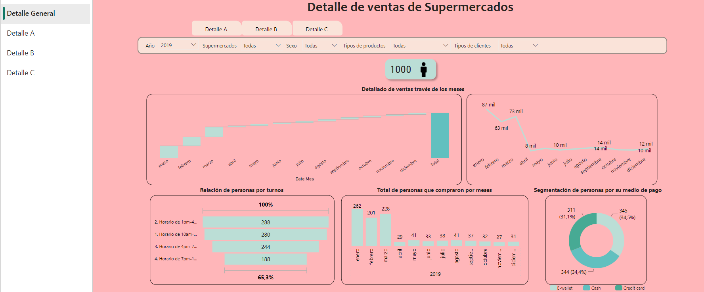
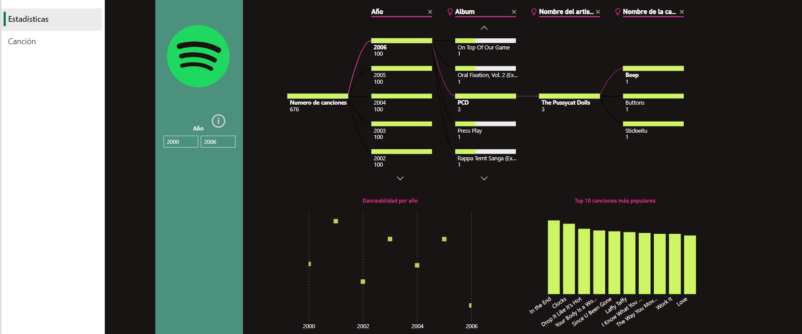

Proyectos en Power Bi
-
Proyecto Datos Supermercado
En mi proyecto de Power BI, utilicé datos de tres supermercados (A, B y C) para crear un informe con cuatro páginas clave: Detalle General, Detalle A, Detalle B y Detalle C. En la página 'Detalle General', presenté gráficos que muestran el rendimiento de las ventas, incluyendo ventas mensuales y variación intermensual. Estos gráficos revelan tendencias y patrones de ventas a lo largo del tiempo.
También incluí un gráfico que muestra la distribución de visitantes por hora, proporcionando información útil para la gestión de recursos. En cuanto a las pestañas de 'Detalles' para supermercados A, B y C, presenté comparativas de ventas, gasto promedio, satisfacción del cliente y análisis de productos adquiridos por mes. Estos datos son fundamentales para la toma de decisiones estratégicas y campañas promocionales -
Proyecto Datos Spotify
En mi proyecto de Power BI, utilicé un conjunto de datos de Spotify (2000-2019) y creé dos pestañas: 'Estadísticas' y 'Canciones'.
- 'Estadísticas': Muestra gráficos jerárquicos que desglosan canciones por año, artista, álbum y nombre. También muestra la cantidad de canciones "bailables" por año y un Top 10 personalizable.
- 'Canciones': Permite seleccionar una canción y muestra detalles como artista, álbum, año de lanzamiento. Además, con un clic en "play", se envía una playlist personalizada al correo del usuario, habilitado con Power Automate.
Este proyecto no solo presenta datos de Spotify de una manera accesible y visualmente atractiva, sino que también añade un componente interactivo y práctico al permitir a los usuarios recibir una playlist personalizada en su correo electrónico.


Proyectos en Python
-
Proyecto Análisis OMS
En este ejercicio, trabajé con un conjunto de datos de la OMS. Comencé por realizar una exploración inicial de los datos y las columnas disponibles. Identifiqué que algunas etiquetas de columnas eran poco claras y las renombré para mejorar su comprensión. Además, noté la presencia de datos faltantes en algunas columnas y opté por llenarlos mediante la imputación del promedio de los datos en esas columnas.
Luego, mi análisis se centró en la relación entre las diversas columnas y en la predicción de la esperanza de vida. Para llevar a cabo la predicción, empleé el método de regresión lineal, una técnica de machine learning.
Link: Análisis OMS -
Proyecto Análisis de chat de Whatsapp
Para este ejercicio, me encontré con un archivo de chat de WhatsApp de la universidad que tenía un formato inusual: '[fecha , hora] nombre : mensaje'. Dado que no podía usar el método de separación común debido a la falta de un separador estándar, decidí crear una función para procesar los datos.
Para luego hacer un análisis de qué palabras se hablan más o en qué momento del día es cuando escriben más mensajes, electrónico
Link: Análisis WhatsApp -
Y más...